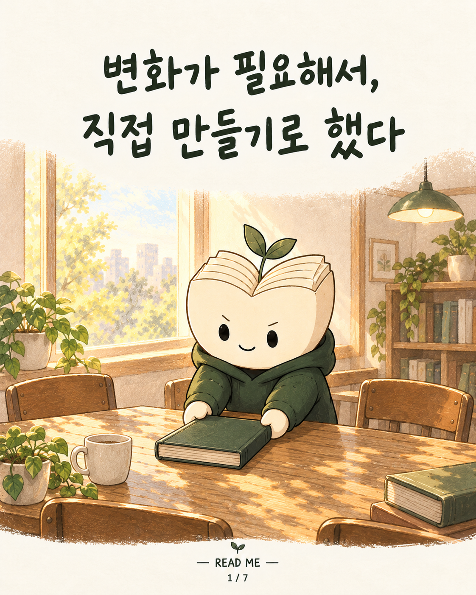
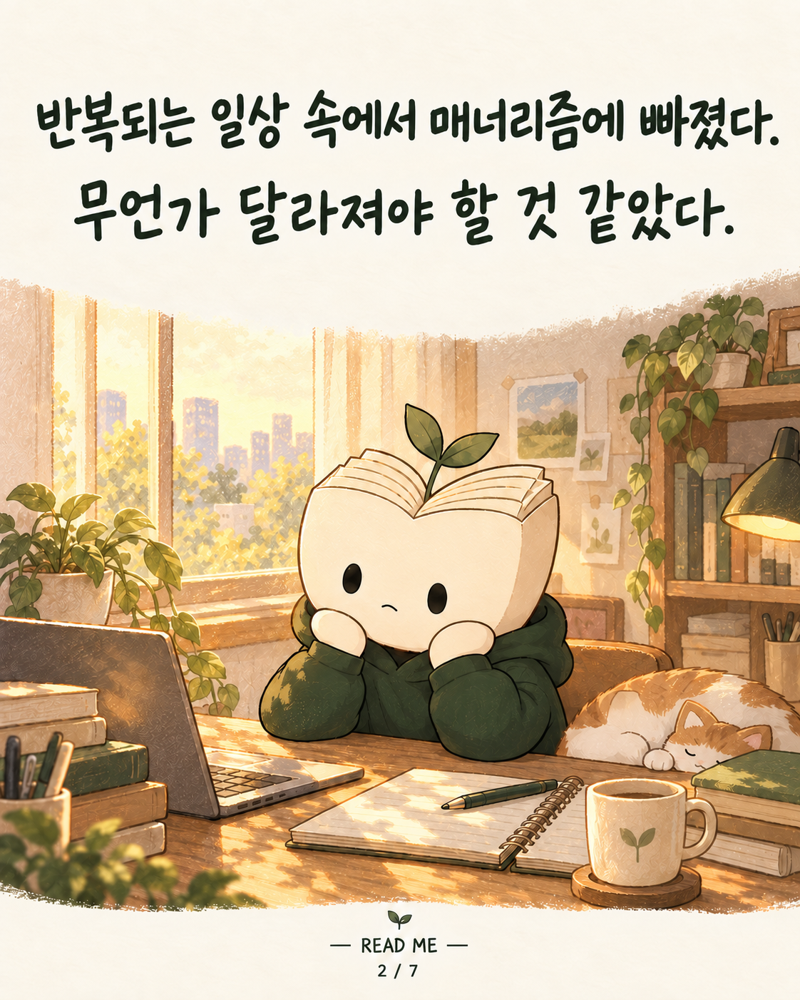
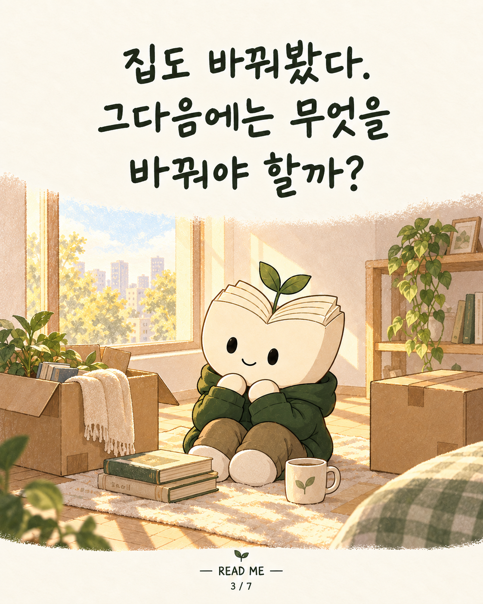
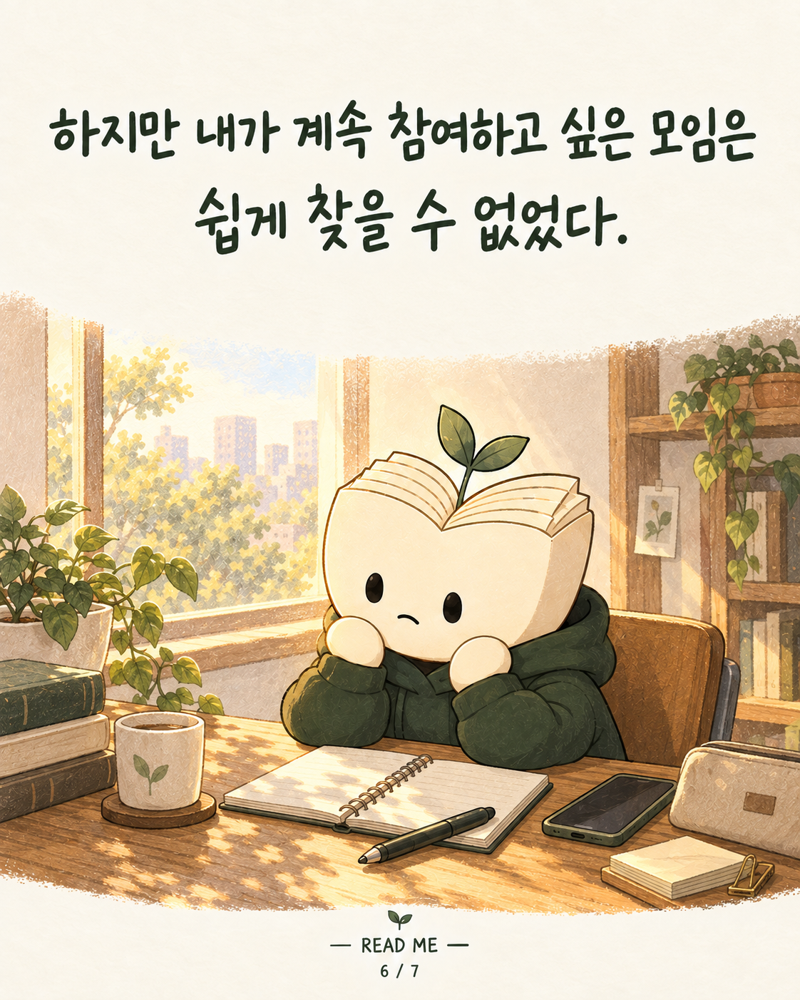
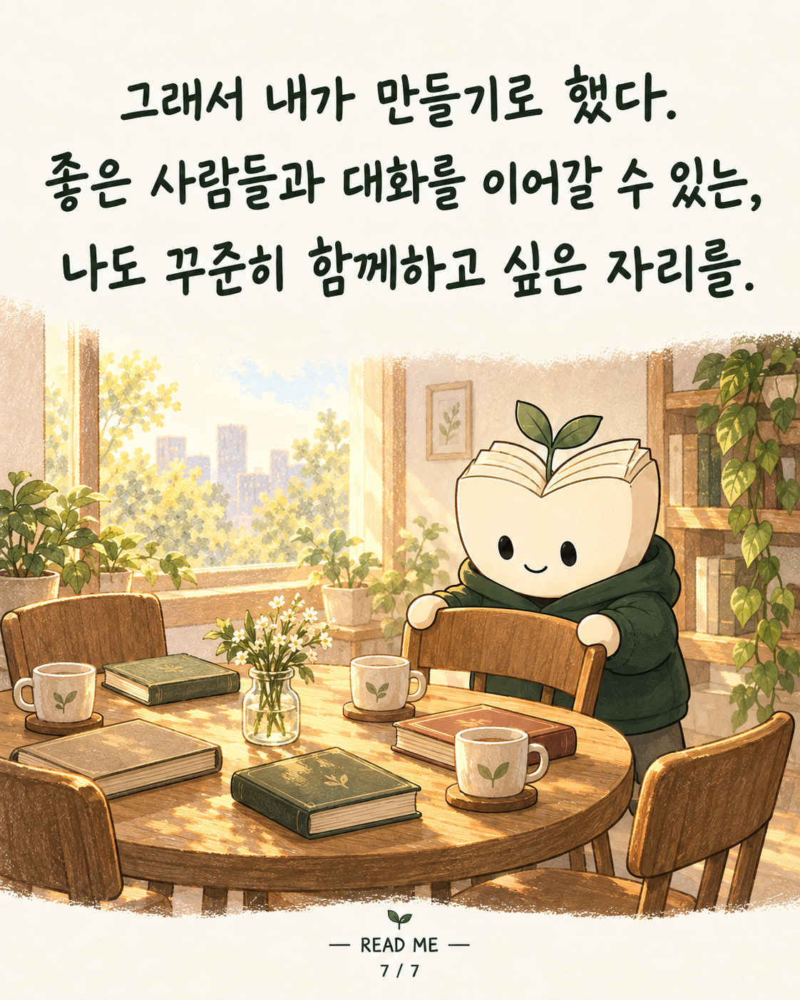

반복되는 일상 속에서 매너리즘에 빠졌다. 집도 바꿔보고, 나를 새로운 환경에 놓는 일을 생각했다. 그때 떠오른 건 독서토의를 하며 마음이 채워졌던 순간들이었다. 하지만 내가 계속 참여하고 싶은 모임은 쉽게 찾을 수 없었다. 그래서 직접 만들기로 했다. 좋은 사람들과 대화를 이어갈 수 있고, 나도 꾸준히 함께하고 싶은 자리. READ ME는 그런 마음에서 시작됐다. READ ME가 궁금하다면 이 계정으로 DM을 보내주세요. #README #리미 #독서모임 #모임을만든이유 #함께하는시간